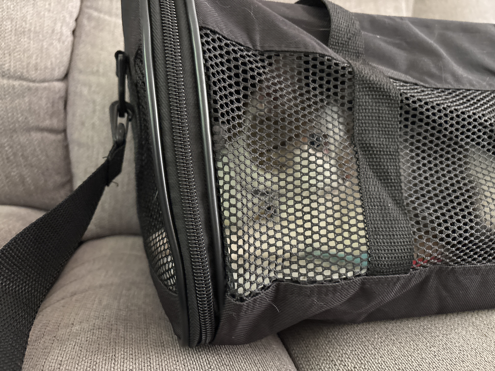
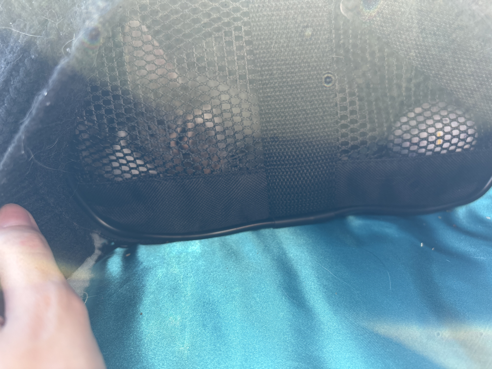
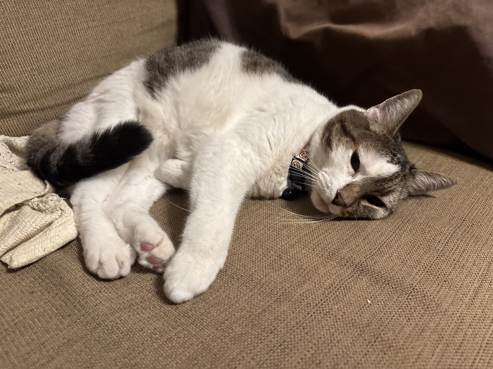

I am still in shock and awe.
We did it. We fucking did it. I have moved out of my parents' place and I am living safely with friends. I still have a long way to go, but the important thing is that I'm out. These last few weeks have been a blur and I cannot believe it. I'm out. I'm out.
This is only day three so far. It's been awesome! I've set up my computers, I've been scheduling posts as normal, I've been going to the store and buying my own food, I went to the first day of my new job? It might sound so basic or silly, but it means the world to me and beyond.
I'll probably write up a more "professional" post for this over on the art blog, but for now know this: streams will likely be a little more erratic. To protect my roommate's privacy, I'm switching back to the fox PNGTuber-- we're returning to cameraless streams. I'll have my own place within a month or two and I am seriously over the moon about it. Kitty is here too! She did great in the car ride and has been exploring and vibing with me.
Here's Eve in her carrier, about to go on a ride!

Here's Eve napping at a quick rest stop. I pulled over to make sure she was doing okay.

When we got there, she hid for a while. I was so happy to see her laying down on the couch with me!
Thank you all so much! Whether you contributed to my GFM fund, sent me tips on how to move out, or simply enjoyed my work, you helped me out immensely. Also, this couldn't have happened without Cohost. Even in the wake of its closure, it is still helping people find happiness. I'm so happy now. I can't wait to see what happens next. Thank you.